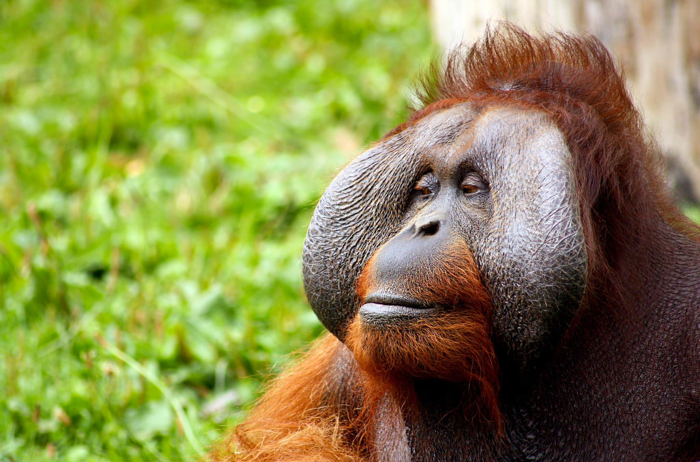

Introduction Orangutans are among the most intelligent primates and are the only great apes found outside of Africa. Their name comes from the Malay words "orang" (person) and "hutan" (forest), meaning "person of the forest." Living almost their entire lives in the canopy of the tropical rainforests of Borneo and Sumatra, they are the largest arboreal animals in the world, perfectly adapted to a life spent high above the ground.
Solitary and Patient Intelligence Unlike baboons or capuchins, orangutans are semi-solitary animals. This unique social structure has led to a different kind of intelligence—one focused on extreme patience and deep memory. They have been known to remember the exact location and fruiting seasons of thousands of different trees. In captivity and the wild, they demonstrate incredible problem-solving skills, such as using large leaves as umbrellas during rainstorms or making "gloves" out of leaves to handle thorny fruits.
Physical Adaptations Everything about an orangutan’s body is designed for climbing. Their arms are much longer than their legs, reaching a span of up to 2 meters (6.6 feet) in large males. Their feet are shaped like hands, with opposable big toes that allow them to grip branches with all four limbs. Adult males develop large cheek pads, known as "flanges," which frame their faces and are used to amplify their long-distance vocalizations, called "long calls," to warn other males and attract females.
Diet and The Role of the "Forest Gardener" Orangutans are primarily frugivores, meaning fruit makes up about 60% to 90% of their diet. They love durians, mangos, and figs. Because they eat so much fruit and travel long distances, they play a crucial role as seed dispersers. By eating seeds and passing them throughout the forest, they ensure the regeneration of the jungle, earning them the nickname "gardeners of the forest."
Conservation and The Future Orangutans are currently classified as Critically Endangered. The main threats they face are habitat destruction due to palm oil plantations, illegal logging, and the pet trade. Because they have a very slow reproductive rate—females only give birth once every 7 to 9 years—their populations are extremely fragile. Conservation efforts are focused on protecting the remaining rainforest corridors and rehabilitating orphaned orangutans to return them to the wild.